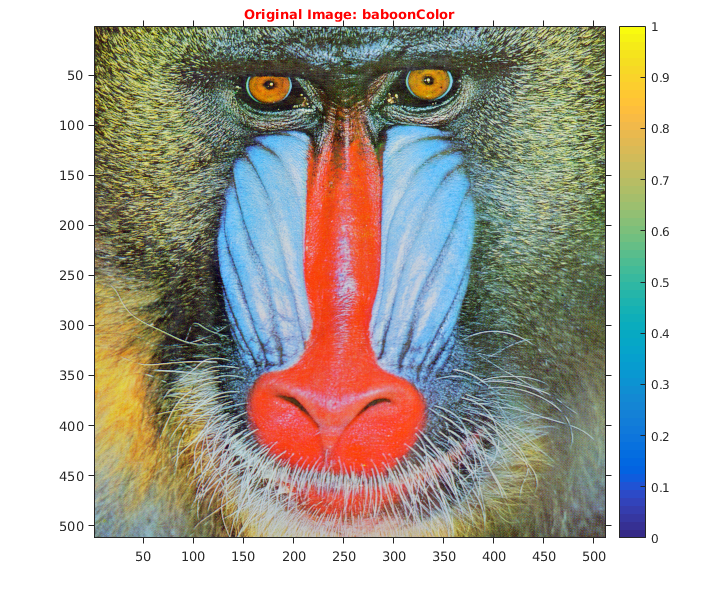
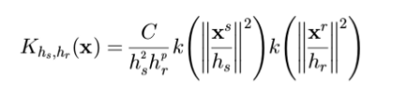
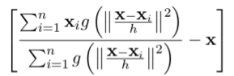
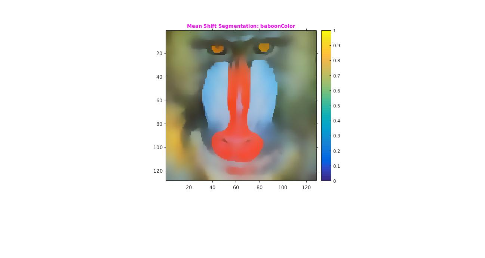

Assignment 3 -- Question 2
CS-663 Group-163059009,16305R011,16305R006
Contents
Initialization
Reading input "baboon" color image.
tic; fileBaboonColor='../data/baboonColor.png'; imgBaboonColor=imread(fileBaboonColor); img=im2double(imgBaboonColor); figure('name','Original Image: baboonColor'); imshow(img); title('\fontsize{10}{\color{red}Original Image: baboonColor}'); axis tight,axis on; o1 = get(gca, 'Position'); colorbar(),set(gca, 'Position', o1);
Smoothing and Rescaling
We are smoothing the image by sigma as 2 and window size 50x50 For fast processing of the image we are rescaling the image by the factor of 1/4 other wise its lot of time. Smoothing = Gaussian of Sigma 2 Rescale = 1/4 of current image
scale=1/4; GaussianFilter=fspecial('gaussian',[50,50],2); GaussianBlurImage=imfilter(img,GaussianFilter); GaussianBlurResizedImage= imresize(GaussianBlurImage,scale); figure('name','OGaussianBlurResizedImage: baboonColor'); imshow(GaussianBlurResizedImage); title('\fontsize{10}{\color{red}GaussianBlurResizedImage: baboonColor}'); axis tight,axis on; o1 = get(gca, 'Position'); colorbar(),set(gca, 'Position', o1);
Mean Shift Segmentation
We have used a gaussian kernel. kernel used :

WE heve used both color (RGB) and spatial-coordinate (XY) features.
Formula used for mean shift

Here function g is gradient of log-PDF.
Parameters used
- Number of iteration: 5
- Sigma RGB = 0.12
- Sigma Space = 1.4
Output
Segmented image
- Number of segments obtained : More than 10
- Time taken for execution of code : 100 sec
tic out=myMeanShiftSegmentation(GaussianBlurResizedImage,5,0.12,1.4); figure('name','myMeanShiftSegmentation: baboonColor'); imshow(out); title('\fontsize{10}{\color{magenta}Mean Shift Segmentation: baboonColor}'); axis tight,axis on; o1 = get(gca, 'Position'); colorbar(),set(gca, 'Position', o1); toc;
Elapsed time is 102.226408 seconds.